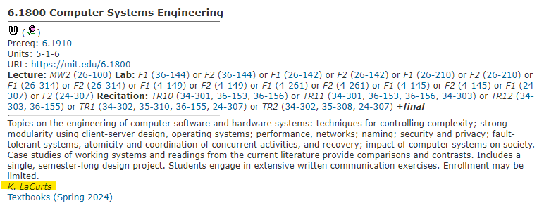

Notes
- First-year students cannot cross-register until their second semester at Wellesley.
- For ALL COURSES at MIT, Babson, and Olin: if you want to apply the course to a major, minor, or distribution requirement, you have to fill out a Transfer of Credit form, which you can find at MyWellesley → Administrivia → Transfer of Credit Requests & Approval.
- For any course that you plan to count for your CS major, make sure your CS faculty advisor, or the Chair, approves that this course will count toward your CS major/minor prior to registering for it (unless it is on this list of MIT classes that are acknowledged to count for CS degree credit)
- For ALL COURSES at MIT, Babson, and Olin: you can only take one credit-bearing course per semester.
- If you want to take two, you can petition the Academic Review Board
MIT
How to choose classes: This is the MIT subject listing and schedule, their (less user-friendly) equivalent of the Wellesley College Course Browser. Most CS courses are under Course 6, but there are also math courses, MAS courses, and data science courses available.
How to register for classes: Three steps: 1) Fill out the necessary forms. 2) Ask the professor's permission to enroll. 3) E-mail the forms to the Wellesley and MIT registrars.
If you're specifically interested in taking CS major requirement courses at MIT, you can take equivalent courses to: CS 111, CS 231, CS 235, and MATH 225, as you can see on this page. For students entering Wellesley Fall 2024 or later, 200-level core classes such as CS231, CS235 and CS240 must be taken at Wellesley.
- Fill out the necessary forms. There are two:
- Cross-registration form: Wellesley-MIT Cross-Registration Form
- Note that this requires the MIT professor's signature. That's the next step. Leave it blank for now.
- Save this as a PDF after completing it.
- Non-Institute Biographic Form: Non-Institute Biographic Form for Students Cross-registering at MIT
- Save this as a PDF after completing it.
- Ask the professor's permission to enroll.
- You can find the professor teaching the class you want to take by looking at the name at the bottom of the course listing (example below, highlighted in yellow). Specify in the email what section you want to enroll in for lecture, lab, and/or recitation: M is Monday, T is Tuesday, W is Wednesday, R is Thursday, and F is Friday. 
- You can look up the professor's email using the MIT directory: https://web.mit.edu/directory/.
- Here is a sample email: Hello Prof [X], my name is [X] and I am a [first/second/third/fourth] year student at Wellesley College studying [X]. I am hoping to take [CLASS] this semester. If there is space, I would love to enroll. I attached a cross-registration form for you to sign if there is space. Thank you, [NAME]
[ATTACHED CROSS-REGISTRATION FORM] - E-mail the necessary forms to the Wellesley and MIT registrars.
- The Wellesley registrar (registrar@wellesley.edu) needs the cross-registration form and a screenshot of the MIT professor's e-mail giving you permission to enroll.
- The MIT registrar (records@mit.edu) needs the cross-registration form and the Non-Institute Biographic Form.
How to get to classes:
- To find where your class is, check the locations on the course listing. They are in the form BUILDING-ROOM. For the highlighted example, 26-100 means Building 26, Room 100.
- The MIT Exchange Bus takes students from Wellesley to MIT and back. Here is the schedule: Shuttle Bus Schedules | Wellesley College
Important links:
Babson
How to choose classes: Search the Babson course catalog!
- You can sort by division:
- Most CS courses will fall under “Operations and Information Management”, but there are also interesting courses in other divisions.
How to register for classes: One step: 1) Fill out the cross-registration form.
- You can find the cross-registration form here: Wellesley-Babson Cross-Registration Form. Upon submission of the form, the information will be automatically sent to Wellesley's registrar.
- When the course is approved by Wellesley's registrar, the information will be automatically forwarded to Babson's registrar! Babson's registrar will then register you if there is space and notify you and Wellesley's registrar about your registration status.
How to get to classes:
- The Wellesley-Olin-Babson shuttle takes students from Wellesley to Olin and Babson and back. Here is the schedule: Shuttle Bus Schedules | Wellesley College (Scroll down to Wellesley-Olin-Babson Shuttle).
Important links:
Olin
How to choose classes: Search the Olin course catalog!
- Click the relevant year:
- Click "Courses, Credits, Hours":
- Most CS courses will fall under “ENGR”, but check out other divisions too:
How to register for classes: One step: 1) Fill out the cross-registration form.
- You can find the cross-registration form here: Wellesley-Olin Cross-Registration Form. Upon submission of the form, the information will be automatically sent to Wellesley's registrar.
- When the course is approved by Wellesley's registrar, the information will be automatically forwarded to Olin's registrar! Olin's registrar will then register you if there is space and notify you and Wellesley's registrar about your registration status.
How to get to classes:
- The Wellesley-Olin-Babson shuttle takes students from Wellesley to Olin and Babson and back. Here is the schedule: Shuttle Bus Schedules | Wellesley College (Scroll down to Wellesley-Olin-Babson Shuttle).
Important links:
Contact Us
This site is only possible through the efforts of students and educators like you. If you have a resource you think could be added to the page, an idea for a page on TransparenCS, or any critiques, suggestions, funny memes, questions, or poems, please contact us!